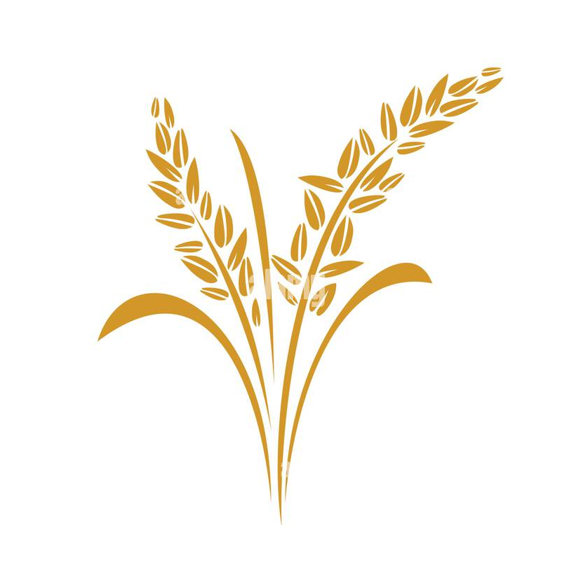

Smart Irrigation Dashboard
Average Soil Moisture:
--
% |
Main Water Level:
--
%
LEGEND
🟢 Soil OK (≥40%)
🔴 Soil Dry (<40%)
🟢 Trapdoor OPEN
🔴 Trapdoor CLOSED
🔵 Water Sufficient (≥30%)
🟠 Water Low (<30%)